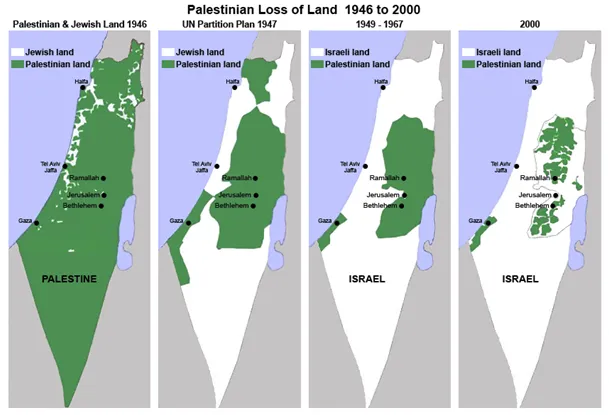
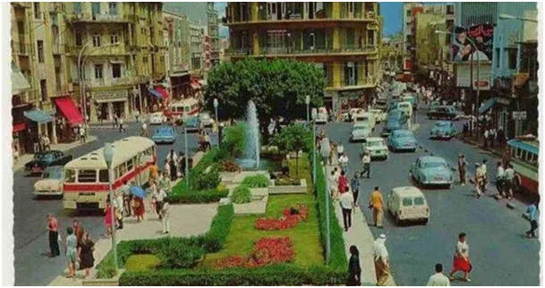
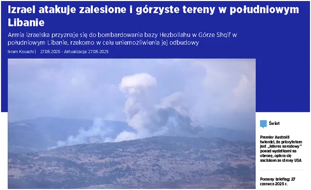

O co chodzi na Bliskim Wschodzie?
Liban jest wielokulturowym Państwem, w XX wieku Bejrut, stolica była nazywana Paryżem Wschodu lub Miastem Mercedesów. Jest to jedno z najstarszych miast świata, zamieszkane od ponad 5 000 lat. Liban odziedziczył po Imperium Osmańskim wieloreligijne, żyjące w pokoju społeczeństwo.

System polityczny zapewnia wszystkim głównym wyznaniom miejsca w parlamencie. Obok szyitów i sunnitów żyje tam kilka różnych grup chrześcijańskich, w tym maronici i katolicy. W krajobrazie obok minaretów dominują strzeliste wieże kościołów. W XX wieku był to raj milionerów i prostych ludzi, do czasu. Izrael po 1948 r., w trakcie zagarniania kolejnych palestyńskich terenów stał się w końcu sąsiadem Libanu i rozpoczął z nim wojny. Już w 1975 wskutek intryg sąsiada doszło w Libanie do religijnej wojny domowej. Potem Izrael wielokrotnie atakował i okupował ten kraj.
Mimo skutecznego oporu obecnie Liban jest państwem upadłym, zdemolowanym, nieustannie bombardowanym przez Izrael. Dziś, kilkadziesiąt godzin po rozejmie z Iranem, Izrael zaatakował ponownie Liban. Pretekstem jest legalna szyicka partia Hezbollah, mająca swą reprezentację w parlamencie i rządzie, a traktowana przez USA i Izrael jako organizacja terrorystyczna. Hezbollah jest wspierany przez Iran, wcześniej też przez Syrię, jako siła militarna przeciwstawiająca się agresywnej ekspansji Izraela na Ziemiach arabskich, jest regularną formacją wojskową walczącą z najeźdźcą. Żydzi z Palestyny zostali deportowani przez Rzymian w trakcie Powstań Żydowskich w latach 66-73 i ostatecznie w roku 135. Żydowska świątynia i Jerozolima zostały doszczętnie zburzone, na tym miejscu wybudowano całkiem nowe miasto Aelia Capitolina.

Pod koniec XIX wieku na fali rozwoju ideologii nacjonalistycznych wieku Żydzi zaczęli migrować do Palestyny, wówczas do wieloreligijnego Imperium Osmańskiego. Po Drugiej Wojnie światowej terenem zarządzali Brytyjczycy, którzy przyjmowali Żydów migrujących z całego świata. W 1948 z akceptacją zachodu powstało państwo Izrael a wraz z nim rozpoczęły się krwawe wojny z ludnością miejscową trwające już blisko 100 lat.
Paweł Klimczewski